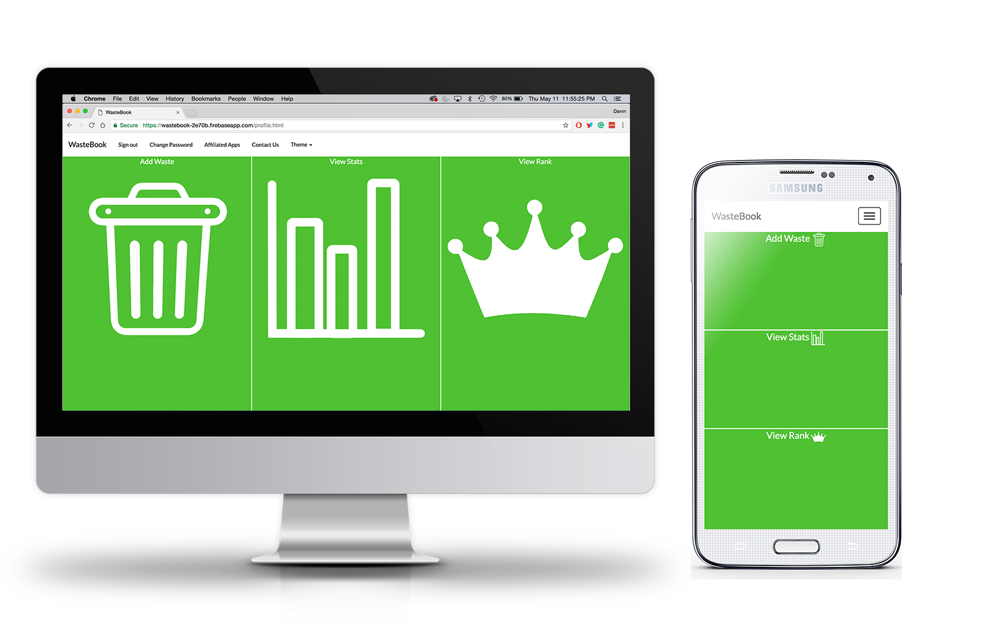

STATISTICS


WAS THE LAST TIME YOU
THREW AWAY FOOD AVOIDABLE?
OVER 50% OF FOOD WASTE IS
$31 BILLION WORTH OF FOOD
IS WASTED IN CANADA EACH YEAR
WHAT IS FOOD WASTE?
Food waste is the act of throwing away food that can still be used. An innocent mistake everyone is guilty of from time to time. But what people usually don't consider is the consequences caused by food waste. They don't consider, the money they're spending, the space being taken up in their fridge/pantry, how it attracts bugs and wild animals, the amount of methane (a greenhouse gas) being released into the atmosphere, among other consequences.
Now this and a lot more can be avoided if we as a people decided to make slight changes in our behaviour. Even something as small as not throwing away food just because it's past the "Best Before" date can make a huge difference. Sidenote: the "Best Before" date is simply a guess from the provider of when they think the food will be most fresh, it has no bearing on when the food is no longer edible. But for some reason, people aware of this issue still choose not to act. And people have tried to make it as easy as possible, with apps that give you recipes for aged food, that tell you when stores are throwing away food that they're willing to give you for a big discount, or allows you to record the amount of food you throw away for self-awareness.
The common reasons for this appear to be that people don't feel as though they're making a difference, they find it to be a hassle, or they simply don't think they're contributing much to the problem, therefore, don't need to do anything, to begin with.
STATISTICS
WHAT IF THERE WAS A WAY TO KEEP TRACK OF THE FOOD YOU WASTE AND COMPARE IT TO OTHER CANADIANS?
OUR SOLUTION: WasteBook
WasteBook is a web application that allows you to input the amount of food you waste, the reason why, the amount your threw away, and other optional info. Once it gets the info it will provide you with a score and then compare your score with other users with all sorts of different demographics and give you a rank. It will also keep track of your common reasons and waste items and based on those patterns, it will recommend other apps that will help you most.
So what makes this different from any other food waste diary app? Well of course there's the rank feature that takes our product past awareness and productivity and introduces a competitive environment where everyone is basically trying to reach the top percentages. Aside from that, our app also recommends apps based on the user's behaviour rather than trying to promote random apps simply waiting to see what sticks.
Our number 1 priority in making this app is to put you, the user, first and respect your choices and preferences. We won't punish you for not engaging, we won't make you type the same stuff over and over again, and we especially won't try to deliver less than our best quality. All we ask is that you give us a chance to prove ourselves to you.